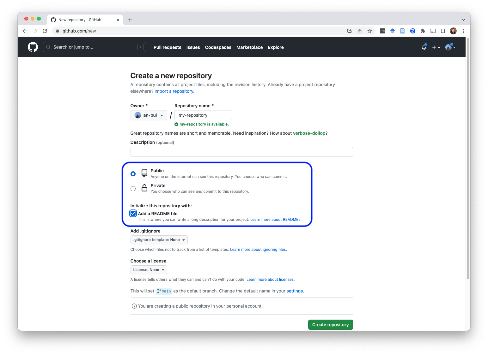
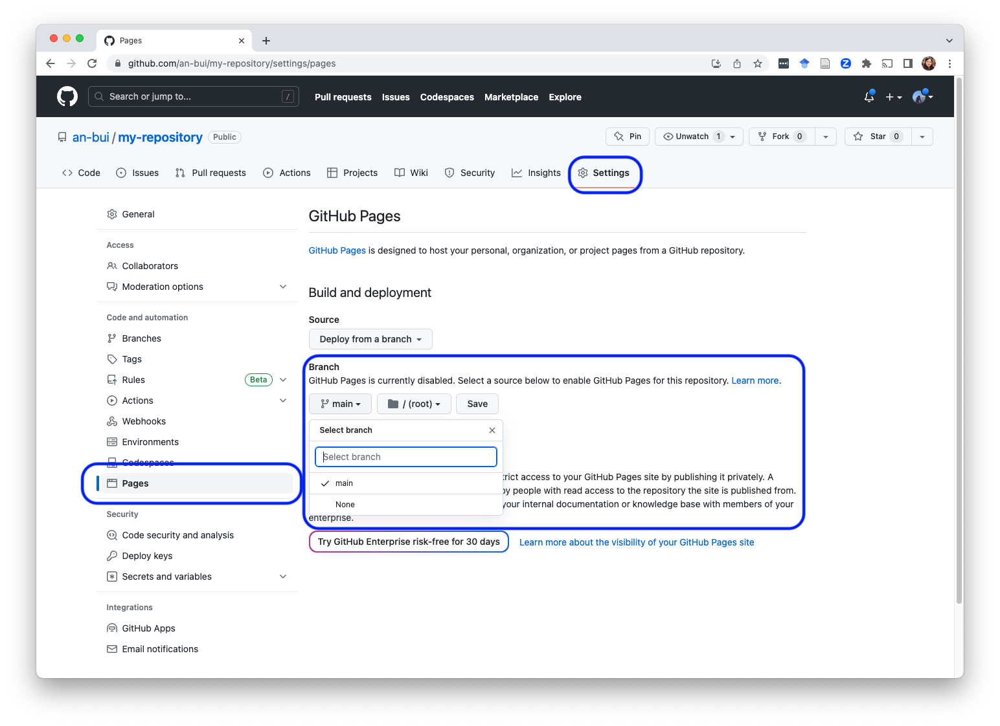
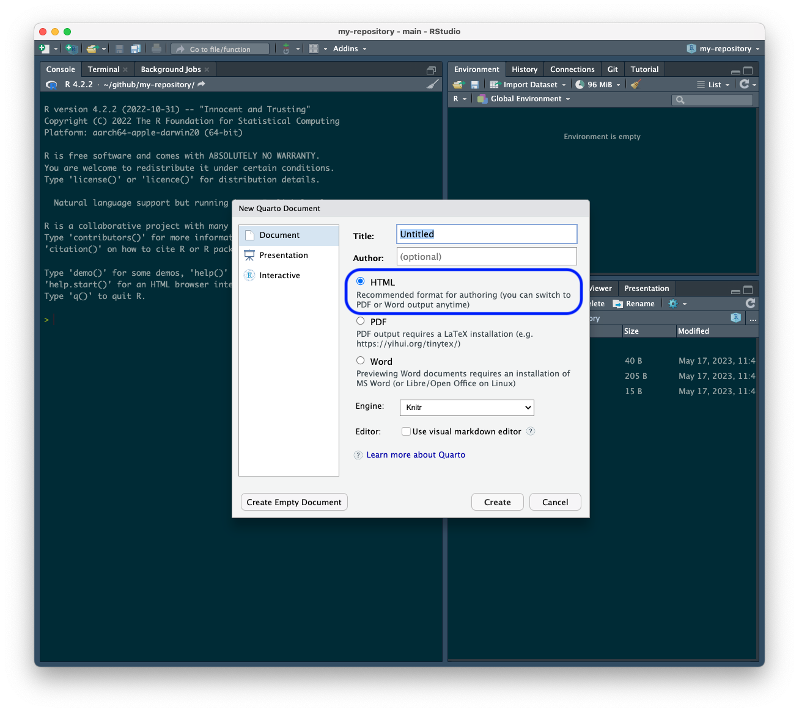
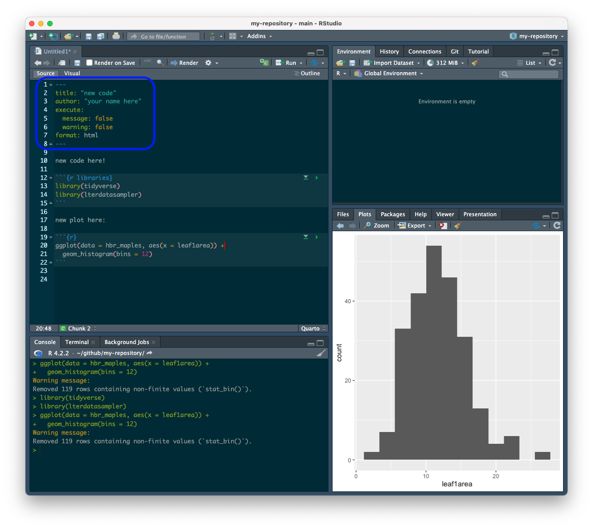
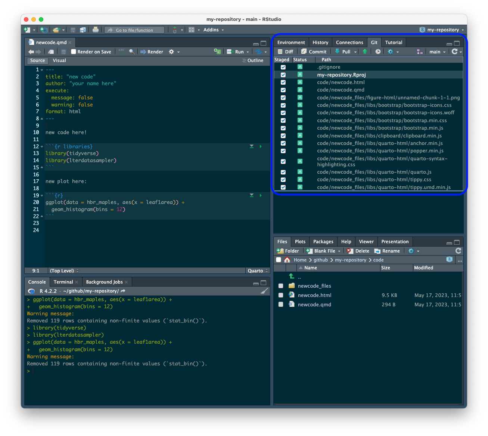
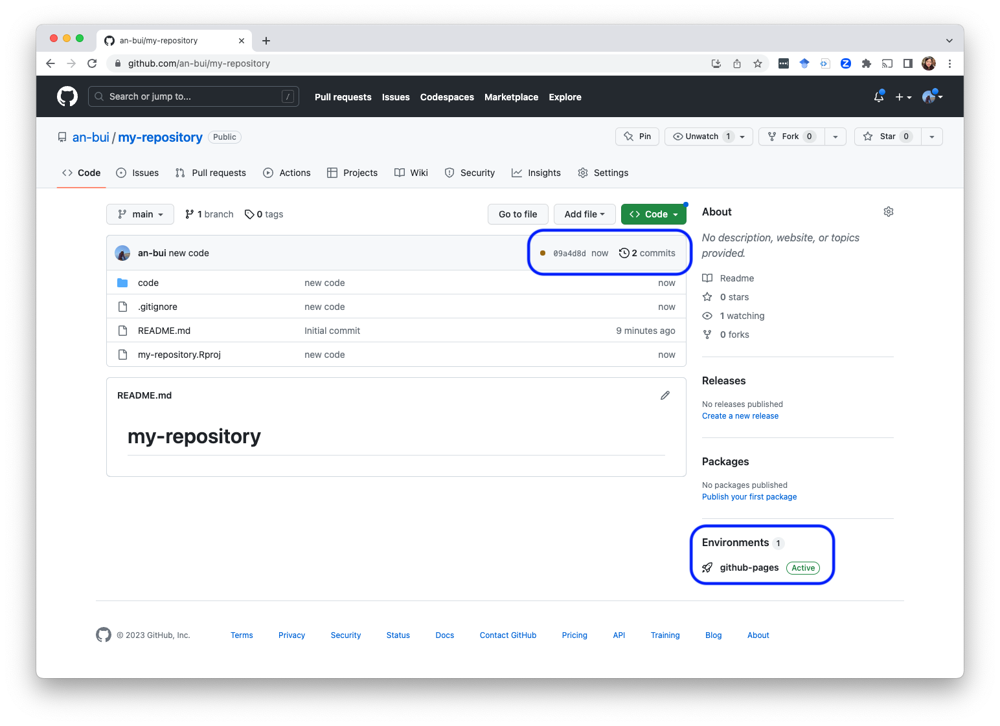
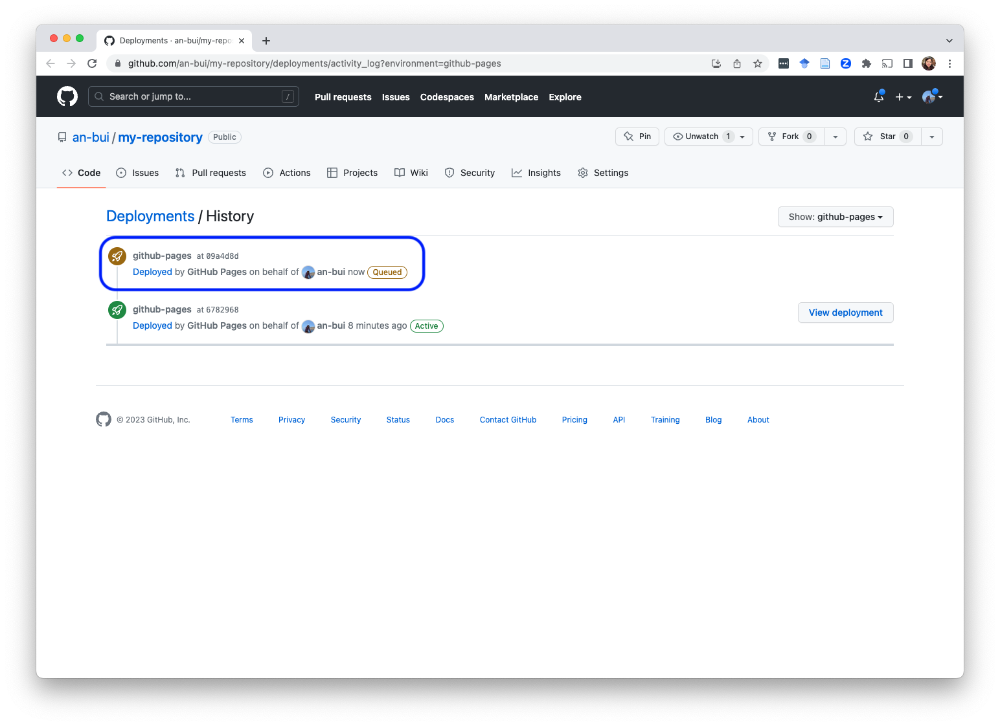
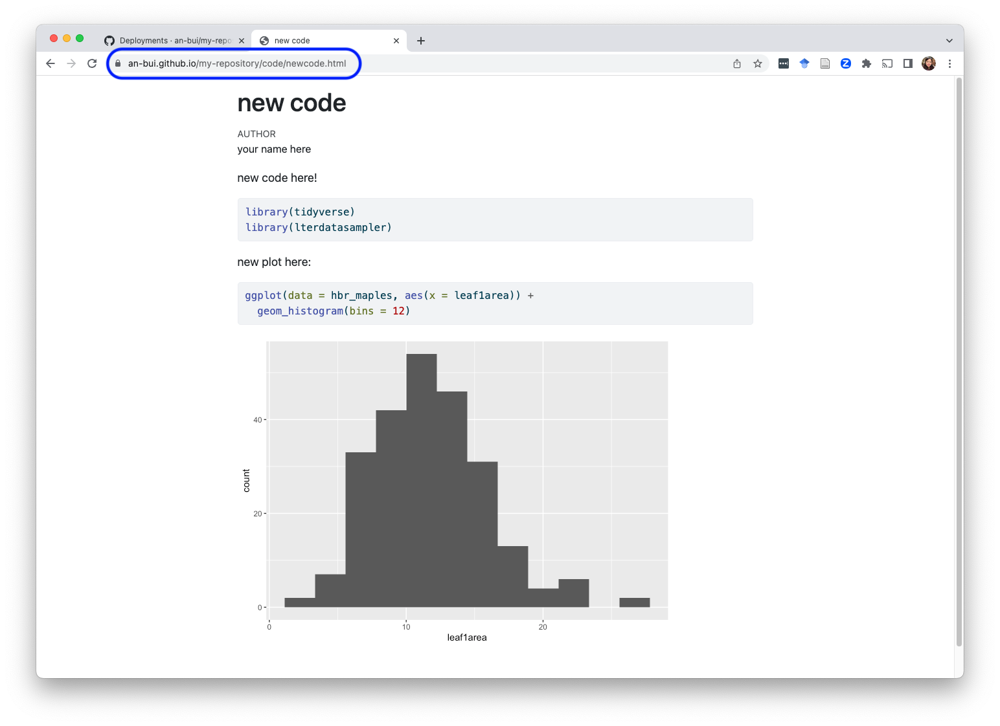

knitr::opts_chunk$set(echo = TRUE, message = FALSE, warning = FALSE)Setting up GitHub pages
GitHub pages
Why set up GitHub pages?
If you render/knit your documents to html, someone else who wants to see your document will have to fork/clone your repo into their computer, and open up your html document. By setting up GitHub pages, you can essentially make your repository into a website and create a URL to your rendered html document. Then, if you want to share your code, someone can just look at the page on that URL and not have to deal with your whole repository.
In class, we walked through the simplest way to set up GitHub pages. However, there are lots of advanced options to make your repository into a website. For example, in CHOYOA 2, you’ll set some different options when you set up GitHub pages.
1. Create a new repository on GitHub
Make sure you have the repository set to be public and that you are adding a README.

2. Set up GitHub pages
Navigate to the main page of your repository. Click on Settings > Pages. Select your main branch as the deployed branch. Click save.

You know that this worked if you get a message at the top of the window saying “GitHub Pages source saved.”
3. Clone your repo to your computer and create some code.
In the demo, we put all our code into a new folder in the repo called code. Then, create a new Quarto/RMarkdown document and make sure it is saved as either an HTML (ideal) or a PDF (also works but not as aesthetically pleasing). Save that document in the code folder.

4. Adjust the YAML options.
There are lots of document options you can adjust in the metadata. In class, we went through how to set global options for code chunks using execute:.

In RMarkdown: this happens in the knitr set up chunk:
5. Render/knit your code.
Note the file path for the .qmd document is: code/newcode.qmd. That means the file path for the .html document is: code/newcode.html.

6. Stage/commit/push those changes
If you are using Quarto, you’ll see a lot of files for the rendered plots, formatting options, etc. If you are using RMarkdown, you won’t. This is just a little difference between Quarto and RMarkdown.

7. Return to GitHub and look at the environment
Go back to your repository on GitHub. You should see two visual cues that this has worked:
1. You have a brown circle by your most recent commit. This corresponds to what’s happening in…
2. The “Environments”. You will see github-pages marked as “active”.

8. Check the deployment
Click on github-pages under Environments. You should see that the deployment (your commit/push) shows up as “Queued”. This will eventually turn into “In Progress”, then “Active”.

Note: depending how how many other actions are happening on GitHub at any given time, this may take a couple minutes. Be patient! Eventually it will be active.
9. Look at the your rendered document!
Your deployed repository will have the URL your-github-username.github.io/repository-name. In this example, the URL is an-bui.github.io/my-repository.
To find your rendered html document, use the file path as your URL. In this example, the file path to the rendered document is code/newcode.html. This means the URL for the .html on my deployed repository is an-bui.github.io/my-repository/code/newcode.html.

Note: sometimes it’s useful to link this URL in the README!
example repo
The repo for this example is here.
Citation
BibTeX citation:
@online{bui2023,
author = {An Bui},
editor = {},
title = {Setting up {GitHub} Pages},
date = {2023-05-17},
url = {https://an-bui.github.io/ES-193DS-W23/resources/github-pages.html},
langid = {en}
}
For attribution, please cite this work as:
An Bui. 2023. “Setting up GitHub Pages.” May 17, 2023. https://an-bui.github.io/ES-193DS-W23/resources/github-pages.html.